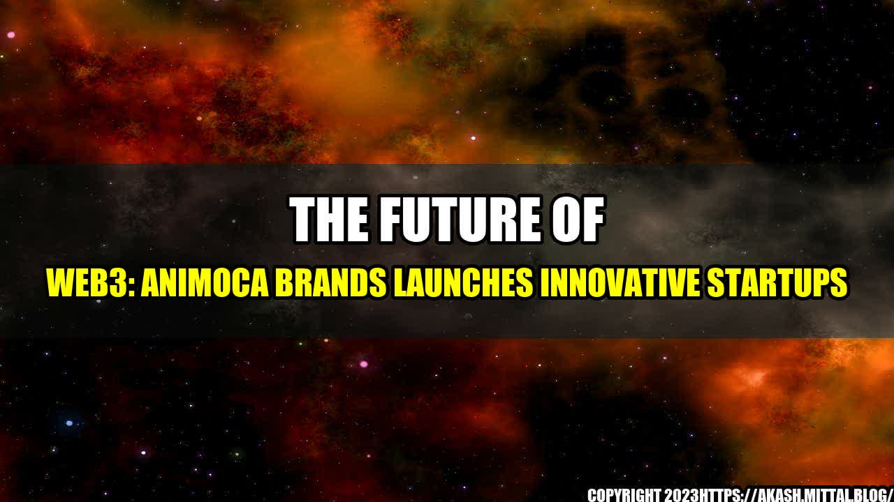

The Future of Web3: Animoca Brands Launches Innovative Startups

Once upon a time, there was a world where technology moved forward at a leisurely pace. Internet speeds were slow, and smartphones did not exist. But in 2021, companies like Animoca Brands are leading the charge in a new technological revolution, ushering in a world where blockchain, NFTs, and Web3 are no longer just buzzwords, but tangible realities.
The recent Demo Day hosted by Animoca Brands showcased some of the most promising startups in the Web3 space, offering a glimpse into what we can expect from this exciting new era of technology.
Web3 Innovation
Web3 is a game-changer for many industries, including gaming, finance, and even art. Here are some quantifiable examples of the impact these startups could have:
- Blockchain Gaming: According to a report by Mordor Intelligence, the blockchain gaming market was valued at $47.2 million in 2020 and is expected to grow to $3.1 billion by 2025.
- NFT Market: The NFT market has exploded in recent months, with NFT sales reaching over $2 billion in the first quarter of 2021 alone, according to DappRadar.
- Web3 Finance: Web3 finance platforms like Compound and Aave have seen massive growth in recent months, with their total value locked (TVL) reaching over $10 billion and $15 billion, respectively.
Eye-Catching New Startups
The startups showcased at the Animoca Brands Demo Day offer a glimpse into the world of Web3, highlighting some of the most promising projects in the space. Here are some of the most eye-catching:
- Render Network: Render Network is a decentralized cloud platform designed to make rendering, a CPU-intensive process used in animation and design, faster and more affordable. The platform uses blockchain technology to offer on-demand rendering services, allowing users to easily and affordably scale their computing power.
- Kiwi Intelligence: Kiwi Intelligence is a blockchain-based platform that uses data to help investors and traders make informed decisions in the cryptocurrency market. The platform offers a suite of tools and analytics, including market sentiment analysis and social media monitoring.
- The Sandbox: The Sandbox is a blockchain-based virtual world where users can create, share, and monetize their own gaming experiences. The platform uses NFTs to allow users to buy, sell, and trade virtual real estate and other in-game assets.
Conclusion
The Web3 revolution is just getting started, and the startups showcased at the Animoca Brands Demo Day represent some of the most promising projects in the space. Here are three key takeaways:
- The blockchain gaming market is set to explode in the coming years, offering new possibilities for gamers and developers alike.
- The NFT market is quickly becoming a new source of value, creating new opportunities for artists and collectors alike.
- Web3 finance platforms are offering new possibilities for lending, borrowing, and investment, with the potential to challenge traditional finance models.
As we move further into the Web3 era, it is important to keep an eye on the innovative startups that are leading the way, offering new possibilities for users, developers, and investors alike.
Reference URLs and Hashtags
- Animoca Brands Demo Day: https://www.animocabrands.com/demo-day-web3
- #Web3 #Blockchain #NFT #Startup #Innovation
- Category: Technology
Curated by Team Akash.Mittal.Blog
Share on Twitter Share on LinkedIn